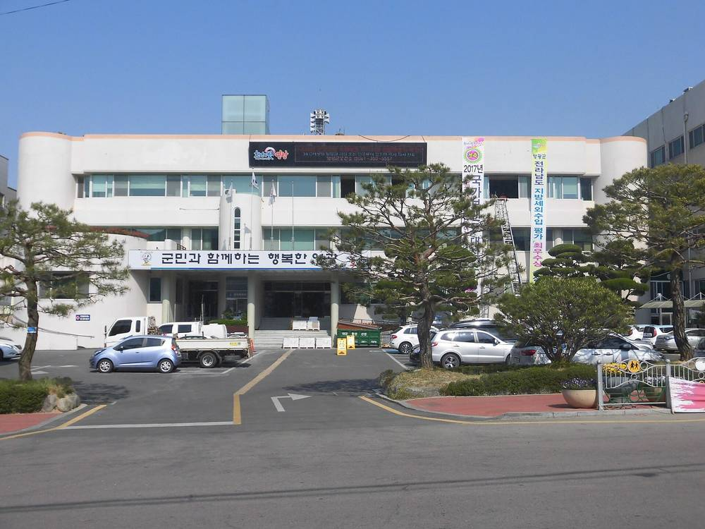

전남광주시의회 "햇빛소득마을, 선정 뒤가 더 중요"…녹색에너지연구원에 준공 후 기술·경영 지원 주문

박원종 에너지산업산림위원장 행정사무감사서 지적…연구원 "회계법인과 AI 정산 시스템 도입 중"
햇빛소득마을이 공모 선정과 발전소 준공에서 멈추지 않고 꾸준한 소득으로 이어지려면 준공 뒤 운영까지 돕는 사후관리 체계가 필요하다는 요구가 광역의회에서 나왔다. 전남광주통합특별시의회 박원종 에너지산업산림위원장(영광1)은 10일 (재)녹색에너지연구원 행정사무감사에서 공모 사업이 선정 단계에만 관심이 몰리고 이후 운영은 뒷전이 되는 관행을 짚었다. 박 위원장은 2~3년 뒤 현장에서는 고령 주민들이 복잡한 회계와 발전소 유지관리를 감당하지 못해 어려움을 겪는다며, 발전소가 정상 궤도에 오를 때까지 연구원이 기술과 경영을 끝까지 지원해야 한다고 말했다. 황규철 녹색에너지연구원장은 전문 회계법인과 손잡고 고령 주민도 쉽게 정산할 수 있는 인공지능(AI) 기반 관리 시스템을 도입하고 있으며, 특별시 에너지산업본부와 협의해 선정 뒤 유지보수와 운영을 지원하도록 용역 과업을 보완하겠다고 답했다. 박 위원장은 이와 함께 축산분뇨 고체연료화와 농가 에너지 자립 모델 연구도 검토해 달라고 요청했다.
시민에너지 관점
독일 에너지협동조합 900여 곳이 오래 버틴 바탕에는 조합 회계와 설비 관리를 대신 봐 주는 지역 협동조합 연합회가 있었다. 마을 발전소는 20년을 가야 하는 사업인데, 첫 2~3년에 정산이 꼬이면 주민 신뢰가 먼저 무너진다. 선정 숫자를 늘리는 것보다 마을마다 회계·점검을 함께 맡아 줄 공공 지원 조직을 두는 것이 주민 소유를 지키는 길이다. 광역 지자체는 사후관리 예산과 인력을 내년 계획에 분명히 넣어야 한다.
출처: 한국시사경제 2026-11-13 권충현 원문 보기
全南光州市議会「日差し所得村は選定後こそ重要」…緑色エネルギー研究院に竣工後の技術・経営支援を要求
朴元鍾エネルギー産業山林委員長が行政監査で指摘…研究院「会計法人とAI精算システムを導入中」
韓国の「日差し所得村（ヘッビッ所得マウル）」事業が公募選定や発電所の竣工で止まらず、安定した所得につながるよう、竣工後の運営まで支える事後管理体制が必要だとの要求が広域議会から出た。全南光州統合特別市議会の朴元鍾エネルギー産業山林委員長は10日、緑色エネルギー研究院の行政事務監査で、公募事業が選定段階ばかりに注目され、その後の運営が後回しになる慣行を指摘した。朴委員長は、2～3年後の現場では高齢の住民が複雑な会計や発電所の維持管理を担いきれず苦労しているとし、発電所が軌道に乗るまで研究院が技術と経営を最後まで支援すべきだと述べた。黄圭哲研究院長は、専門の会計法人と協力して高齢住民でも簡単に精算できるAIベースの管理システムを導入しており、特別市エネルギー産業本部と協議して選定後の保守・運営を支援できるよう委託業務を補完すると答えた。朴委員長はあわせて、家畜ふん尿の固形燃料化や農家のエネルギー自立モデルの研究も検討するよう求めた。
市民エネルギーの視点
ドイツの約900のエネルギー協同組合が長く続いてきた背景には、組合の会計や設備管理を代行する地域の協同組合連合会があった。村の発電所は20年続く事業であり、最初の2～3年で精算がこじれれば住民の信頼がまず崩れる。選定数を増やすよりも、村ごとに会計と点検を共に担う公的支援組織を置くことが住民所有を守る道だ。広域自治体は事後管理の予算と人員を来年の計画に明確に盛り込むべきだ。
出典: 한국시사경제 2026-11-13 권충현 原文を読む
全南光州市议会："阳光收入村，入选之后更重要"…要求绿色能源研究院提供竣工后技术与经营支援
能源产业山林委员长朴元钟在行政监察中指出…研究院称"正与会计师事务所引入AI结算系统"
韩国广域议会提出，"阳光收入村"项目若要不止步于入选和电站竣工、而能持续带来收入，就需要一套覆盖竣工后运营的后续管理体系。全南光州统合特别市议会能源产业山林委员长朴元钟10日在绿色能源研究院行政事务监察中指出，公募项目的关注度集中在入选阶段，之后的运营却被忽视。他表示，两三年后到现场会发现，高龄居民难以应付复杂的会计和电站维护，研究院应在电站步入正轨之前持续提供技术和经营支援。研究院院长黄圭哲回应称，正与专业会计师事务所合作，引入让高龄居民也能轻松结算的人工智能管理系统，并将与特别市能源产业本部协商，补充委托任务，以支援入选后的维护和运营。朴元钟还要求研究院考虑开展畜禽粪便固体燃料化和农户能源自立模式研究。
市民能源视角
德国约900家能源合作社能够长期运营，背后有代为处理财务和设备管理的地区合作社联合会。村级电站是要运营20年的事业，头两三年结算一旦出问题，居民的信任会最先崩塌。与其增加入选数量，不如为每个村配备共同承担会计和检修的公共支援机构，这才是守护居民所有权的办法。广域地方政府应在明年计划中明确列入后续管理的预算和人力。
来源: 한국시사경제 2026-11-13 권충현 查看原文
South Jeolla-Gwangju council: Sunlight income villages need support after selection, not just at launch
Committee chair urges green energy institute to back villages with technical and management help after completion; institute cites AI-based accounting system
A regional council in South Korea has called for an aftercare system so that "sunlight income villages" deliver steady income rather than stalling once they are selected and their solar plants are built. At a Nov. 10 audit of the Green Energy Institute, Park Won-jong, chair of the energy industry and forestry committee of the integrated South Jeolla-Gwangju special city council, criticised a pattern in which attention goes to the selection stage while later operation is neglected. He said that two or three years on, elderly residents struggle with complex accounting and plant maintenance, and that the institute should provide technical and management support until the plants run normally. Institute president Hwang Gyu-cheol replied that it is introducing an AI-based management system with a professional accounting firm so elderly residents can settle accounts easily, and will revise its service contract with the city's energy industry headquarters to support maintenance and operation after selection. Park also asked the institute to consider research on turning livestock manure into solid fuel and on energy self-sufficiency models for farms.
Citizen Energy View
Germany's roughly 900 energy cooperatives have lasted in part because regional cooperative federations handle their accounting and technical checks. A village power plant is a 20-year venture, and if settlements go wrong in the first two or three years, residents' trust is the first thing to break. Rather than chasing more selections, placing a public support body that shares accounting and inspection with each village is how resident ownership is protected. Regional governments should write clear aftercare budgets and staffing into next year's plans.
Source: 한국시사경제 2026-11-13 권충현 Read the original